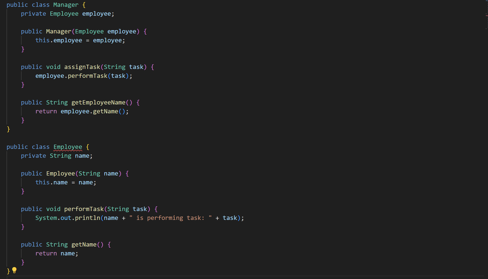
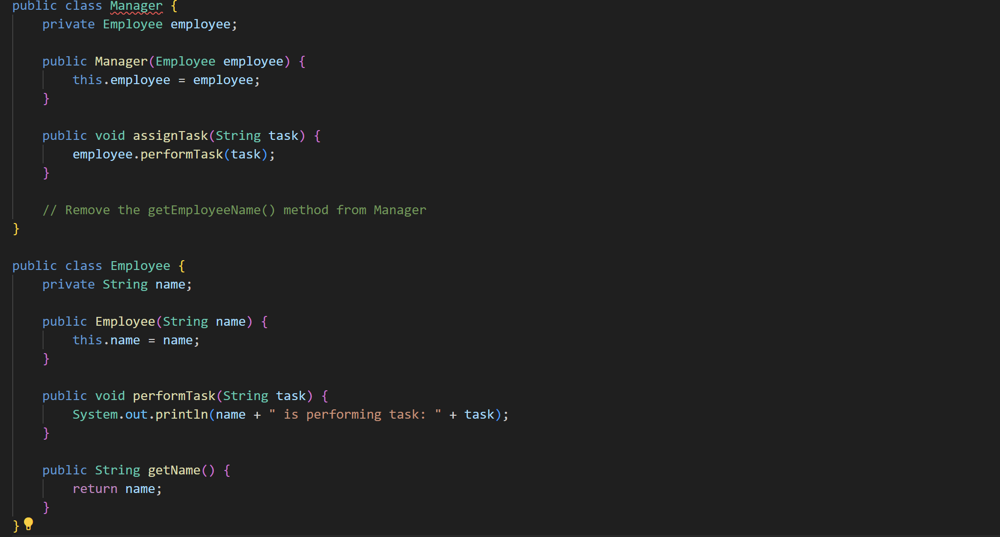

Contoh Code :
Before :

Dalam contoh di atas, kelas Manager bertindak sebagai "middle man" di mana semua metode yang dipanggil pada objek Employee sebenarnya dipanggil melalui objek Manager. Hal ini tidak efisien dan tidak perlu.
After :

Dalam kode yang diperbaiki, metode getEmployeeName() di kelas Manager telah dihapus karena tidak lagi diperlukan. Kini, kelas Manager hanya memanggil metode performTask() pada objek Employee langsung tanpa perlu melalui "middle man". Hal ini membuat struktur kode menjadi lebih sederhana dan lebih langsung.